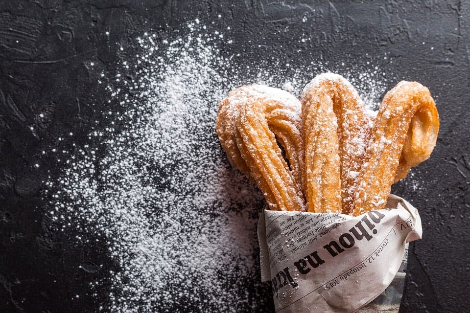

Curros

Diposting pada 18.41, 17 Agustus 2020
Bahan:
- 250 ml susu UHT plain/putih
- 100 gr butter/margarin
- 150 gr tepung cakra
- 1/2 sdt garam
- 3 butir telur
- Topping
- Gula halus dan cinnamon powder
- Butterscotch
- Selai coklat
Cara Membuat:
1. Siapkan panci, panaskan susu dan air, butter, dan garam sampai mendidih.
2. Matikan api, masukkan tepung cakra, lalu aduk rata.
3. Nyalakan api kembali, aduk-aduk sampai dasar panci berselaput tipir sekitar 2 menit.
4. Dinginkan adonan sekitar 15 menit lalu siapkan mixer roti, masukkan telur satu persatu.
5. Hasil akhirnya, adonan tidak terlalu padat dan tidak terlalu encer.
6. Masukkan adonan kedalam plastik segitiga, ujungnya beri spuit berlubang besar.
7. Langsung masukkan kedalam minyak goreng panas menggunakan api kecil. Goreng sampai kecoklatan.
8. Tiriskan curros, taburkan dengan gula halus yang dicampur dengan bubuk kayu manis. Hidangkan dengan topping sesuai selera.